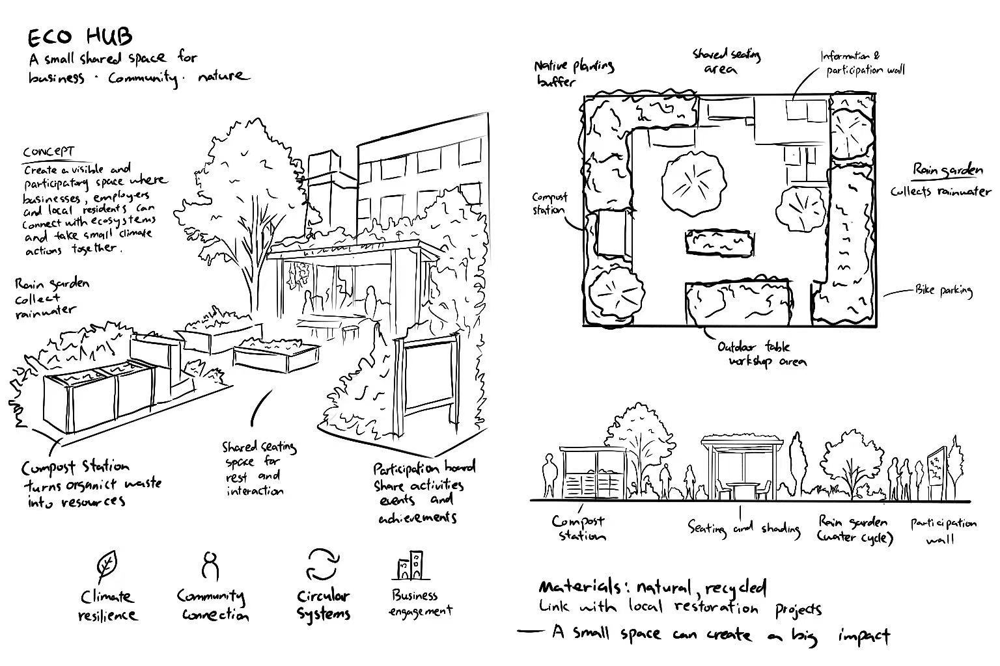

Week 5 Blog – Planning and Action on Prototyping Experiments
The Experience
This week, I continued to make progress on the first round of prototyping experiments for my Business Stream project. Having finalised the Eco Hub concept in Week 4, I began to think more clearly about how to test whether spatial interventions can truly help businesses forge stronger connections with their surroundings, the local ecology and community engagement. I no longer regard the Eco Hub as a final design proposal, but rather as an early prototype. The aim is not to complete the entire project, but to test whether this direction is worth pursuing further. The Week 5 lecture materials also emphasised that an early prototype is not the full project; it should be a small, focused test designed to help identify a key quality.
I began sketching some simple concept sketches and prepared a rough 3D prototype to visualise the Eco Hub space. I focused primarily on compost stations, rain gardens, areas for native plants, shared seating areas, and an information board detailing local business participation. These are not final design details, but rather tools to help me articulate the concept more clearly. At the same time, Week 5 was largely devoted to preparing for the Week 6 critique session. The class covered what a critique actually is and how it should be used during the early design phase. I realised that a critique is not simply a ‘show and tell’ presentation, but rather a structured discussion designed to test whether the project’s direction is sound and to determine what steps should be taken next.

This has changed my understanding of presentations. Rather than trying to prove that my idea is already fully formed, I now need to identify the areas where I am most uncertain, and determine what kind of feedback will truly help the project move forward.
Reflection on Action
The biggest step forward this week has been gaining a clearer understanding of exactly what this prototype is testing. In Week 4, I knew I wanted to use 3D modelling to explore the Eco Hub, but I was still unsure whether I was testing the physical space itself, the participation system, or the broader relationship between business and ecology.
Over the course of this week, I have gradually come to realise that the most important issue right now is actually: “Is spatial intervention the right method for creating connection and participation?”
This approach has helped me simplify the entire project considerably, as I no longer need to build the entire business sustainability system in one go; instead, I can focus on creating a small shared ecological space to see whether it can truly foster a sense of visibility and belonging.
I’ve also started to reflect on my own working habits. I’ve realised that I’m prone to wanting projects to look complete far too early on. As I have a fairly visual approach to work, I sometimes feel that as long as the model looks more sophisticated, the project must be progressing well. But the Week 5 module actually highlighted this issue directly: making something look advanced does not always mean the project is progressing well. Sometimes it simply means I’m clinging to an early idea rather than continuing to test it.
This made me slow down and ask a more important question: am I currently building a prototype that will genuinely help me learn, or am I simply producing a result that looks more polished?
Theory
The Week 5 class introduced a very useful working loop:
This made the prototyping process feel much clearer.
I realised that a prototype is not the end goal; it is merely one stage in the entire learning cycle. The purpose of a prototype is to create a sufficiently concrete form so that better questions can be raised during the critique.
The class also explained that a good crit should help answer questions like:
- What is this project trying to do?
- Is that intention clear?
- What is already working?
- Where are the gaps or contradictions?
- What should happen next?
This was helpful because it shifted my mindset away from “presenting answers” and toward “framing better questions.” The Crit Planning Guide also said, "Not a show and tell." This simple sentence changed how I prepared my presentation. Instead of trying to defend my idea, I needed to stay open and let feedback reveal what I could not see myself.
Preparation
This week has made me realise that early prototypes are often most valuable when they are focused, incomplete and honest. I don’t need to address the entire business brief straight away. I just need to test whether the Eco Hub concept is worth pursuing further.
For the Week 6 Crit, I planned my presentation using the structure recommended in class:
I prepared:
- my project direction explanation
- Eco Hub concept sketches
- a rough spatial prototype
- my How Might We question
- focused feedback questions for the group
The main questions I wanted feedback on were:
- Is my core idea clear enough?
- Does this prototype test the right thing?
- Should I continue developing the Eco Hub direction?
- What should I simplify or remove?
- What should I test next?
For Week 6, my goal is not to receive approval, but to gain clearer direction.
I hope that through this critique I can identify a clear next step, the area that most needs simplifying, and the direction most worth exploring further. This is precisely what the course requires us to gain from the critique.